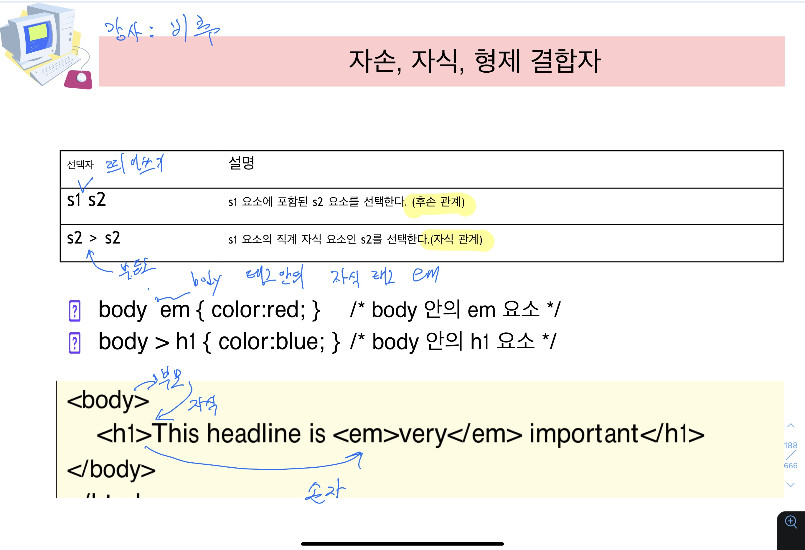
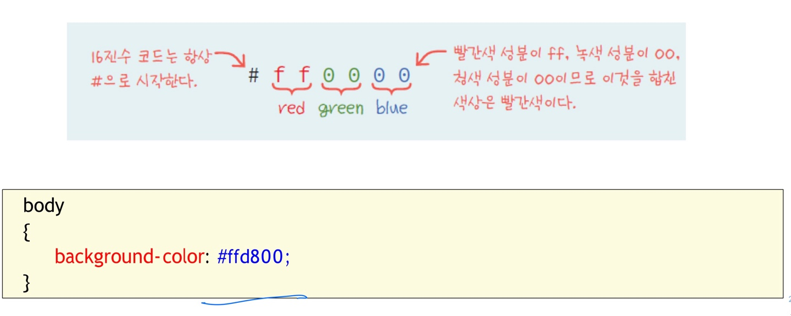
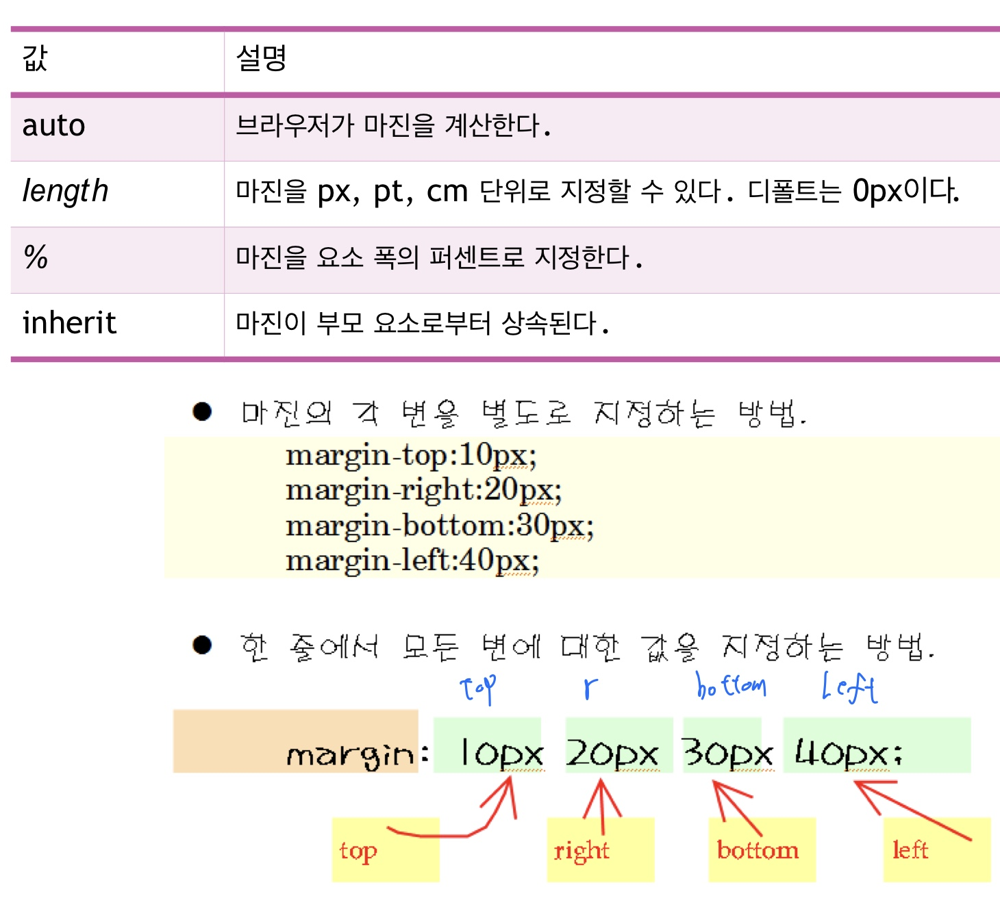
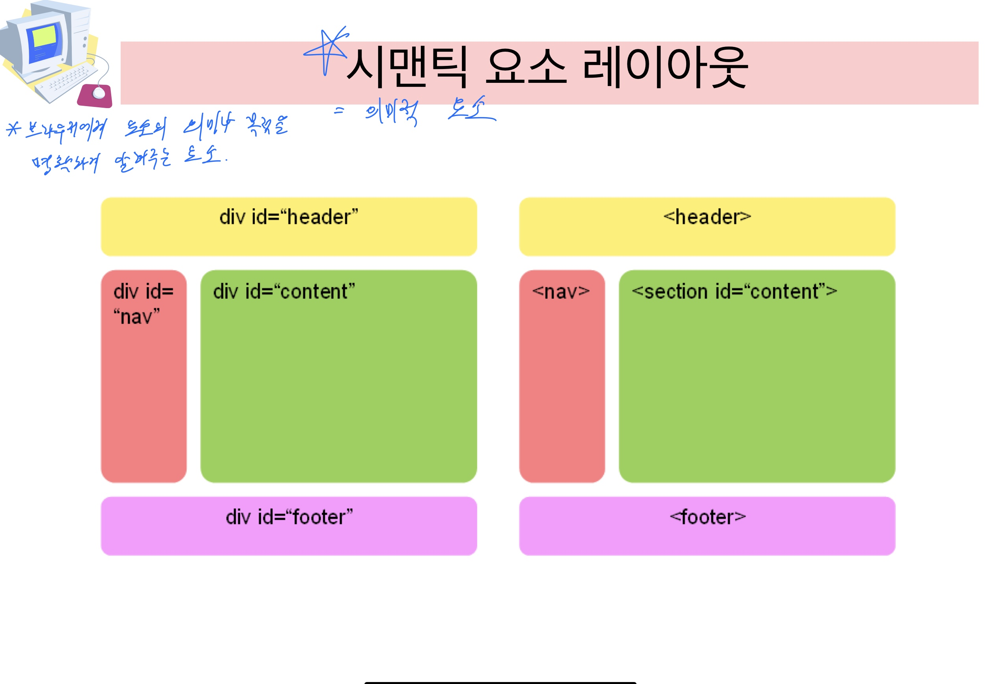
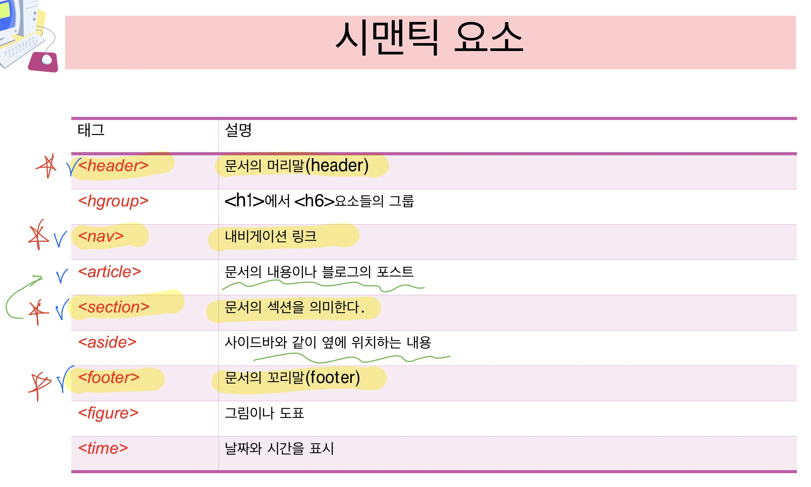
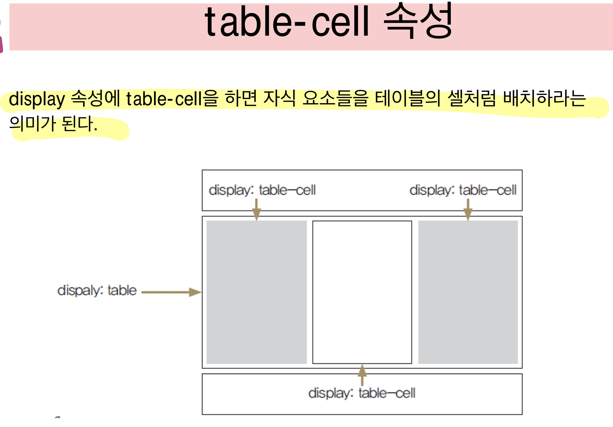

-
CSS3의 기능 및 문법
- CSS3의 기능
- 선택자: 태그를 지칭함.
- 박스 모델 : 박스 두께, 색상등 바꿀 수 있다.
- 배경 및 경계선
- 텍스트 효과
- 사용자 인터테이스
- 2차원,3차원변환 / 애니메이션/ 다중 컬럼 레이아웃 등 여러 기능이 있다
- CSS3의 문법
- 선택자{ 속성: 값;}
- 끝에 반드시 ;을 적어 준다.
-
선택자
- p{color(속성):blue(값);}
- (선택자) { (속성): (값); }
- 선택자는 JQuery에서도 사용
- 가장 많이 사용되는 것은 6가지 정도
- 선택자의 종류
- 타입 선택자
- 전체 선택자
- 클래스 선택자
- 아이디 선택자
- 아이디 선택자
- 아이디 선택자
- 속성 선택자
- 의사 선택자
- 타입 선택자
- HTML 요소 이름을 사용
- 예를 들어 P태그, h1태그 등
- 전체 선택자
- 페이지 안의 모든 요소를 선택
- 아이디 선택자
- 특정한 요소를 선택
- #target { color : red;}
- <p id="target">Hello Worldl!</p>
- 클래스 선택자
- 클래스가 부여된 요소를 선택한다.
- .target { color : red;}
- <p class="target">Hello Worldl!</p>
- 선택자 그룹
- 선택자를 콤마(,)로 분리하여 나열할 수 있다.
- h1, h2, h3 {font-family : sans-serif;}
- 자손, 자식, 형제 결합자 
- 선택자를 콤마(,)로 분리하여 나열할 수 있다.
- h1, h2, h3 {font-family : sans-serif;}
- 의사 클래스
- 클래스가 정의된 것처럼 간주
- a:link{color:blue;} , 방문한 적 없음
- a:visited{color:green;} , 방문한 적 있음
- a:hover{color:red;} , 마우스 갖다댐
- a:active{ color:yellow;} , 마우스 클릭하는 순간
- #id.a:link{} 구문으로 사용가능하다
- 사용예시 추가했는데 필드셋 너비 조절하는 속성은 무엇?
- 속성 선택자
- 특정한 속성을 가지는 요소를 선택한다.
- h1[title]{color:blue;}
- p[class="example"]{color:blue;}
-
CSS 삽입 위치
- 외부 스타일 시트
- 외부 스타일 시트는 스타일 시트를 외부에 파일로 저장하는 것
- 많은 페이지에 동일한 스타일을 적용하려고 할 때 좋은 방법
- <link type="text/css" rel="stylesheet" href="mystyle.css">
- 내부 스타일 시트
- 내부 스타일 시트는 HTML 안에 CSS를 정의하는 것이다.
-
<head> <style> h1{ color:red;} p{ color:#0026ff;} </style> </head> - 인라인 스타일 시트
- 각각의 HTML 요소마다 스타일을 지정하는 것
- 2개 이상의 선언이 있다면 반드시 끝에 ;을 적어준다.
- 예시 <p style="text-align:center">
- 다중 스타일 시트
-
CSS의 속성들
- 폰트
- 텍스트
- 경계선
- border : 요소를 감싸는 경계선
- 마진과 패딩
- 배경
- background-color : 배경색
- background-image : 배경이미지
- 리스트
- 테이블 스타일
- display
-
위치 설정 방법
- float
- z-index
- CSS3 효과
- 색상
- 이름으로 표현 : "red"
- 10진수로 표현 : rgb(255, 0, 0)
- 퍼센트로 표현 : rgb(100%, 0%, 0%)
- 16진수로 색상 나타내기 
-
박스 모델
- HTML 요소들을 박스 형태로 그리는 것.
- 박스는 배치, 색상, 경계 등의 속성을 가진다.
-
박스 모델의 속성
- margin<border(경계)<padding< content >padding>border>margin
- resize:both; 박스 크기조절 가능
- 마진과 패딩 
- 요소의 크기 지정
- width,height-요소의 크기
- min-width, min-height:요소의 최대 크기
- max-width, max-height:요소의 최대 크기
- overflow 속성
- 자식 요소가 부모 요소의 범위를 벗어났을때, 어떻게 처리할 것인지를 지정
- hidden - 부모 영역을 벗어나는 부분을 보이지 않게 한다.
- scroll - 부모 영역을 벗어나는 부분을 스크롤 할 수 있도록 한다.
- auto - 자동으로 스크롤바가 나타난다.
- 시맨틱 요소 레이아웃  
- table-cell 속성 
-
시험문제
-
예제모음
| 속성 | 설명 | 값 | 비고 |
| color | 글자색 | red; | |
| font | 한 줄에서 모든 폰트 속성을 설정 | ||
| font-weight | 볼드체 설정 | normal; bold; |
|
| font-size | 폰트의 크기 | pt; px; %; em(배수); 키워드(small, medium,,,); |
|
| font-style | 이탤릭체 설정 | normal; italic; oblique; |
|
| font-family | 글꼴 |
| 속성 | 설명 | 값; | 비고 |
| color | 글자 색 | 색상값; | |
| text-align | 정렬 | left; right; center; justify(양쪽정렬); |
|
| text-decoration | 밑줄,윗줄,가운데 줄 | none; underline; oveline; line-through(글자 가운데 선); |
|
| text-transform | 대소문자 변환 | uppercase(모두 대문자); lowercase(모두 소문자); capitalize(첫글자만 대문자); |
|
| text-indent | 들여쓰기 | ||
| text-shadow | 그림자 효과 | ||
| line-height | 줄의 높이 | 180% | |
| letter-spacing | 글자간 간격 | ||
| direction | 작성 방향. 가로쓰기, 세로쓰기 | ||
| word-wrap | 글자 자동 줄 바꿈 | break-word; | |
| column-count | 다단(신문기사에 글자들 단 나뉜거처럼) | 2; |
| 속성 | 설명 | 값 | 비고 |
| border-style | 경계선 종류 | none; dotted; dashed; solid; double; groove; ridge; inset; outset; |
|
| border-width | 경계선의 폭 | 1px 1px 1px 1px; | |
| border-color | 경계선의 색상 | 색값; | |
| border-radius | 둥근 경계선 | 1px; | |
| box-shadow | 경계선 그림자 | 2px 2px 2px #666666 (x위치 y위치 흐린값 색값); | |
| border | 경계축약 | 5px solid red (width style color); | |
| border-width: border-style: border-color: |
경계축약2 | 0px 0px 1px 0px; (top right bottom left)(시계방향) solid; blue; |
| 속성 | 설명 | 값 | 비고 |
| margin | border바깥여백 | 0px 0px 0px 0px; | |
| padding | border안쪽여백 | 0px 0px 0px 0px; | |
| 속성 | 설명 | 값 | 비고 |
| 속성 | 설명 | 값 | 비고 |
| background | 한줄에서 모든 배경 속성 정의 | red url('back.gif') no-repeat rignt top; | |
| background-attachment | 배경이미지가 고정or스크롤 | fixed; scroll(기본값); |
|
| background-color | 배경색 | red; | |
| background-image | 배경이미지 | url('이미지.png'); | |
| background-repeat | 반복여부 | no-repeat; repeat; repeat-x; repeat-y; |
|
| background-position | 이미지 시작위치 | 100px 100px; |
|
| background-size | 이미지 크기 | 100px 100px; |
| 속성 | 설명 | 값 | 비고 |
| list-style | 리스트 속성 한줄 설정 | ||
| list-style-image | *리스트 항목 마커를 이미지로 지정. | ||
| list-style-position | 리스트 마커의 위치를 안쪽인지 바깥쪽인지 지정 | ||
| list-style-type | 리스트 마커 타입 지정 | circle; square; upper-roman; lower-alpha; |
그냥 <ul type="circle">가 낫다 |
| 속성 | 설명 | 값 | 비고 |
| border | 테이블의 경계선 | 5px solid red (width style color); | |
| border-collapse | 이웃한 셀의 경계선을 합칠 것인지 | collapse; separate;(기본값) |
|
| border-spacing | 테이블 셀 사이의 거리 | ||
| empty-cells | 공백 셀을 그릴 것인지 여부 | hide; | |
| table-align | 테이블 셀의 정렬 설정 | text-align 방식 권장 |
| 속성 | 설명 | 값 | 비고 |
| display | 화면 배치 | blcok;(기본값) inline; none; hidden; |
inline이 가로로 길게 쓰는 방식인데 자주쓴다 |
| 속성 | 설명 | 값 | 비고 |
| position | 정상적 배치 정상적 위치가 기준 컨테이너의 원점이 기준 윈도우 원점 기준 |
static; relative; absolute; fixed; |
| 속성 | 설명 | 값 | 비고 |
| float | left; right; |
||
| clear | float중단 | both; |
| 속성 | 설명 | 값 | 비고 |
| z-index | 100; 2; 1; 0; -1; |
| 속성 | 설명 | 값 | 비고 |
| opacity | 투명도 | 0.0~1.0; | |
| visibility | 가시성 | hidden; visible; |
|
| transition | 전환 | 5s; | |
| -webkit-transform | 회전 전환 | rotate(180deg); | |
| transform | translate(10px,10px);평행이동 rotate(45deg);회전 scale(2,1.2);크기변환 skew(20deg,10deg);비틀기 변환 matrix();일반적인 변환 |